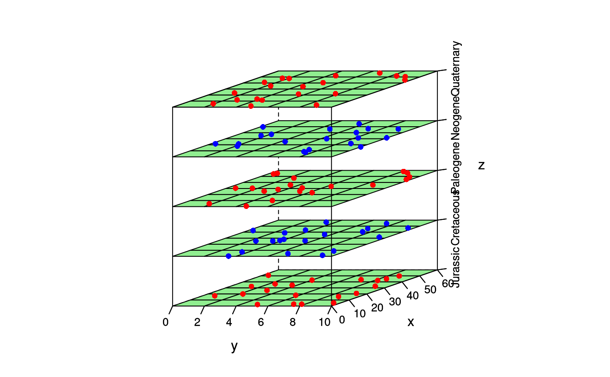

Disparity through time plot using lattice
Source:R/disparity_through_time.R
disparity_through_time.RdPlots points on 2-D surfaces within a a 3-D framework. See
lattice::wireframe() and lattice::panel.cloud() for customization
options.
Usage
disparity_through_time(
x,
data,
groups,
pch = 16,
col.point = c("blue"),
scales = list(arrows = FALSE, distance = 1, col = "black", z = list(rot = 90)),
colorkey = FALSE,
screen = list(z = 90, x = 70, y = 180),
aspect = c(1.5, 4),
drape = TRUE,
col.regions = c("white"),
alpha.regions = c(1),
perspective = FALSE,
R.mat = matrix(c(1, 1, 0, 0, 0, 1, 0, 0, 0, 0, 1, 0, 0, 0, 0, 1), 4, 4),
par.settings = list(axis.line = list(col = "transparent"), layout.heights =
list(top.padding = 0, main.key.padding = 0, key.axis.padding = 0, axis.xlab.padding =
0, xlab.key.padding = 0, key.sub.padding = 0, bottom.padding = 0), layout.widths =
list(left.padding = 0, key.ylab.padding = 0, ylab.axis.padding = 0, axis.key.padding
= 0, right.padding = 0)),
lattice.options = list(axis.padding = list(factor = 0)),
...
)Arguments
- x
a formula (most likely of the form
z ~ x * y)- data
a data frame in which variables in the formula are to be evaluated
- groups
a variable in
datato be used as a grouping variable (this is probably the z variable)- pch
the point type
- col.point
color(s) for points on surfaces
- scales
a list specifying how the axes are drawn (see
lattice::xyplot()for details)- colorkey
logical, should a legend be drawn (or a list describing the legend; see
lattice::levelplot()for details)- screen
a list of the rotations that should be applied to each axis
- aspect
a numeric vector of length 2, giving the relative aspects of the y-size/x-size and z-size/x-size of the enclosing cube
- drape
logical, whether the surfaces should be colored based on
col.regionsandalpha.regions- col.regions
color(s) for surfaces
- alpha.regions
alpha value(s) for surfaces
- perspective
logical, whether to plot a perspective view
- R.mat
a transformational matrix that is applied to the orientation of the axes
- par.settings
plotting settings (see
lattice::trellis.par.set())- lattice.options
lattice settings (see
lattice::lattice.options())- ...
Other arguments passed to
lattice::wireframe()
Value
An object of class "trellis", as output by lattice::wireframe().
Examples
g <- data.frame(
x = runif(100, 0, 60), y = runif(100, 0, 10),
z = factor(rep(periods$name[1:5], each = 20),
levels = periods$name[1:5]
)
)
disparity_through_time(z ~ x * y,
data = g, groups = z, aspect = c(1.5, 2),
xlim = c(0, 60), ylim = c(0, 10), col.regions = "lightgreen",
col.point = c("red", "blue")
)
